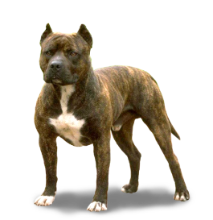

Померанския Шпиц

Померанский шпиц – карликовая порода собак с плотным телосложением и крепкой мускулатурой. Его главная особенность – пушистая, красивая шерсть с плотным подшерстком и густой воротник, напоминающий гриву. Внешне он похож на маленькую лису
Цена: 899$
Бигль
Среднего размера бигль, внешне сходна с фоксхаундом, но мельче, с более короткими ногами и более длинными и мягкими ушами. Рост — от 33 до 40 см в холке, вес — между 9 и 14 кг. Бигли обладают хорошим обонянием и используются прежде всего для охоты.
Цена: 399$
Сиба-Ину
Си́ба-и́ну, или сиба-кэн (яп. 柴犬), — порода охотничьих собак, выведенная на японском острове Хонсю[1], самая мелкая из шести пород исконно японского происхождения[4]. В 1936 г оду объявлена национальным достоянием Японии[5], где основное поголовье этих собак находится в деревнях[6].
Цена: 899$
Американский Стаффордшский
терьер
Американский стаффордширский терьер, или американский стаффи, - это американская порода собак среднего размера с короткой шерстью. Рост американского стаффордширского бультерьера составляет 17-19 дюймов
Цена: 399$
Джек Рассел-Терьер
Эти терьеры были выведены в Великобритании специально для норной охоты. Собака должна залезть в нору и выгнать оттуда зверя или вытащить его в ходе схватки. Терьер должен быть небольшим, чтобы проникнуть в нору и суметь свободно в ней двигаться.
Цена: 899$
Доберман
Доберманы были созданы как целенаправленно сформированная порода и формировались путём тщательной селекции. Начало этой работе положил Карл Доберман, а после его смерти работа над породой была продолжена его последователями
Цена: 399$
Лабродор Ретривер
Лабрадо́р-ретри́вер (англ. labrador retriever) — порода собак. Первоначально была выведена в качестве охотничьей подружейной собаки. Лабрадоры используются на охоте, в качестве собак-поводырей, собак-спасателей, но главным образом в роли компаньонов.
Цена: 899$
Алабай
Алабай ни в коем случае не бойцовая собака, хотя его участие в этом жестоком развлечении, к сожалению, имеет место быть. И в первую, и во вторую, и в третью очередь это животное – охранник и защитник. Несколько своенравный от природы, азиат никогда не станет бездумно выполнять команды
Цена: 399$
Акита Ину
Акита-ину (яп. 秋田犬) или японская собака акита — порода собак, появившаяся в провинции Акита на японском острове Хонсю, одна из шести в регистре японской кинологической организации по защите и сохранению исконно японских пород — Нихонкэн Ходзонкай (Nippo).
Цена: 899$
Кане-Корсо
Ка́не-ко́рсо (итал. Cane corso italiano) — порода собак, один из самых древних представителей группы молоссов, первые упоминания о котором появились в глубокой древности. Официальными предками считаются древнеримские боевые собаки, использовавшиеся в качестве травильных собак-гладиаторов.
Цена: 399$
Бультерьер
Несмотря на устрашающую внешность, бультерьеры весьма доброжелательны и преданны, если их правильно воспитать.Бультерьер не самый лучший вариант для охраны, поскольку редко проявляет агрессию даже по отношению к чужакам. Бультерьер мускулист, подвижен
Цена: 899$
Золотистый Ретривер
Золоти́стый ретри́вер, или го́лден-ретри́вер (англ. golden retriever), — порода охотничьих собак, выведенная в Великобритании в XIX веке. Золотистый ретривер был выведен в Англии как универсальная охотничья собака для подачи битой дичи.
Имеет одних и тех же предков
Цена: 399$
Самоедская собака

Самое́дская соба́ка (самое́д, самое́дский шпиц[1], са́мми) — одна из древнейших пород собак[2]. По одной из версий, самоед ведёт происхождение от ненецкой лайки.[3] В настоящее время существует стандарт породы самоед: английский
Цена: 899$
Ротвейлер
Собаки этого типа являются одними из самых древних в Германии, их происхождение уходит к собакам Римской Империи. Собаки, схожие по фенотипу с современными ротвейлерами, сформировались в период Римской Империи. Считается, что именно эти собаки легли в основу кровей современных ротвейлеров
Цена: 399$
Чихуахуа
Чихуа́хуа — собака-компаньон. Считается самой маленькой собакой в мире и носит имя мексиканского штата Чиуауа. Есть предположение, что предки этой собаки жили в дикой природе, и в эпоху цивилизации тольтеков были одомашнены ими Имеет компактный корпус
Цена: 899$
Американский Питбультерьер
Однозначно описать темперамент питбулей трудно, так как внутрипородные типы сильно отличаются между собой. Однако это собака для опытных собаководов (желательно имеющих опыт в дрессировке). Характер у питбультерьеров волевой, они отличаются повышенной азартностью и сильным боевым духом.
Цена: 399$
Мопс
Мопсы были привезены из Китая в Европу в XVI веке и были популярны в Западной Европе и Нидерландах. В Соединённом Королевстве в XIX веке королева Виктория развила страсть к мопсам, которую она передала другим членам королевской семьи.
Цена: 899$
Немецкая Овчарка
Немецкая овчарка — порода собак, изначально использовалась в качестве пастушьей и служебно-розыскной собаки. Немецкая овчарка была получена в результате селекции и скрещивания некоторых разновидностей гуртовых собак Центральной и Южной Германии.
Цена: 399$